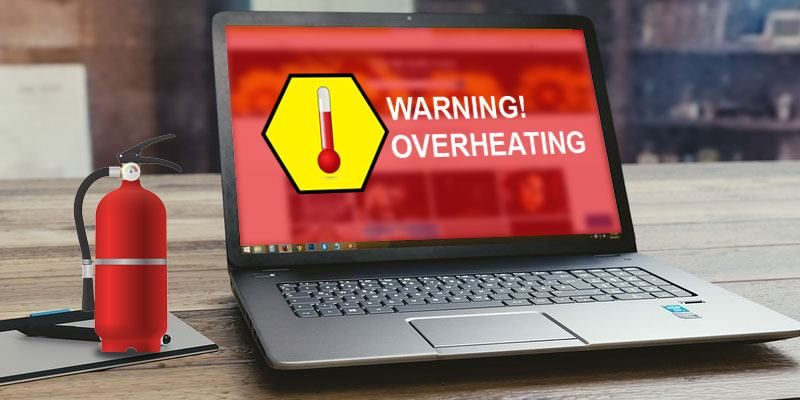

A hot laptop is more than just uncomfortable on your lap. Excessive heat can affect the performance and long-term health of important internal components such as the processor, battery, graphics chip, and motherboard. When a laptop gets too hot, modern processors automatically reduce their speed to control the temperature.
Overheating can happen for several reasons, including blocked ventilation, dust buildup, heavy applications, poor airflow, outdated drivers, or problems with the cooling system. The good news is that many overheating problems can be reduced with a few simple maintenance steps. Here are some practical ways to keep your laptop cooler and running smoothly.
1. Clean the Fans and Vents
Dust is one of the most common causes of laptop overheating. As a laptop is used regularly, dust and dirt can accumulate inside the ventilation openings and around the cooling fan. This prevents fresh air from moving through the laptop and makes it difficult for the internal components to release heat.
Blocked vents can also force the cooling fan to work harder than normal. You may notice the fan running continuously or becoming unusually loud even when you are not performing demanding tasks. Keeping the ventilation openings clean can improve airflow and help the cooling system work more efficiently.
You can carefully clean the external vents using appropriate compressed air and follow the cleaning instructions recommended by your laptop manufacturer. Avoid inserting sharp objects into the vents or using excessive pressure, as this can damage internal components. If a large amount of dust has accumulated inside the laptop, professional cleaning is a safer option.
2. Improve Airflow
The surface on which you use your laptop can have a major effect on its temperature. Many laptops have ventilation openings underneath or along their sides. Using the laptop on a bed, blanket, sofa, or pillow can block these openings and prevent air from circulating properly.
For better airflow, always try to use your laptop on a hard and flat surface such as a desk or table. This allows air to enter and leave through the ventilation openings more easily. Keeping the area around the laptop free from objects can also help prevent accidental blockage of the vents.
If you regularly perform demanding tasks such as gaming, video editing, programming, or 3D work, a suitable laptop cooling pad can provide additional airflow. However, a cooling pad cannot fix a damaged fan or a heavily clogged internal cooling system. If the laptop continues to become extremely hot, the internal cooling system should be inspected.
3. Check Your Power Settings
Windows power settings can also affect how much heat your laptop generates. When the system is configured for maximum performance, the processor may operate at higher speeds for longer periods. This can be useful when running demanding applications, but it can also increase power consumption, fan noise, and temperature.
For everyday activities such as browsing the internet, watching videos, attending online classes, or working with documents, using a balanced power mode can help reduce unnecessary processor activity. You can review your power settings through Windows Settings and choose a mode that provides a good balance between performance and energy efficiency.
If your laptop becomes hot even while performing simple tasks, changing the power mode alone may not solve the problem. In that situation, check the running applications and background processes to see whether a program is continuously using a high amount of CPU resources.
4. Update Drivers and BIOS
Software and firmware can also play a role in how a laptop manages its temperature. Drivers control communication between Windows and hardware components, while the BIOS or firmware helps the laptop manage hardware functions during startup and operation.
Laptop manufacturers sometimes release BIOS, chipset, graphics, and other driver updates that improve hardware stability, power management, and cooling behaviour. If your laptop has unusual fan behaviour or temperature problems, checking for official updates can be useful.
Always download BIOS and driver updates from your laptop manufacturer's official support website and make sure you select the correct model. BIOS updates should be performed carefully because interrupting the update process can cause serious problems. If you are unsure about updating the BIOS, it is better to get help from a professional technician.
5. Know When to Call a Pro
Sometimes basic cleaning and airflow improvements are not enough to solve an overheating problem. If your laptop continues to become extremely hot even during normal use, the problem may be related to an internal hardware component or the cooling system.
A laptop's cooling system normally consists of components such as a fan, heat sink, and thermal interface material. Over time, thermal paste can lose its effectiveness, a cooling fan can become weak or damaged, and the heat sink can become clogged with dust. Any of these problems can prevent heat from being transferred away from the processor efficiently.
Warning signs include extremely loud fans, sudden performance drops, unexpected shutdowns, frequent crashes, unusually high temperatures, or a laptop that becomes too hot to use comfortably. Continuing to use a laptop under severe overheating conditions can potentially cause further hardware problems.
If these symptoms continue after basic maintenance, professional diagnosis is the best option. A technician can inspect the cooling system, clean internal components, check the fan, and determine whether thermal maintenance or hardware replacement is required.
Tip: If your fan is constantly loud, the vents are extremely hot, your laptop becomes noticeably slower after some time, or the system shuts down suddenly, do not ignore the problem.
Overheating can be a sign that the cooling system needs attention. Getting the laptop checked early can help identify the cause before it develops into a more serious hardware problem. Contact TrustLappy for a professional inspection and proper diagnosis.